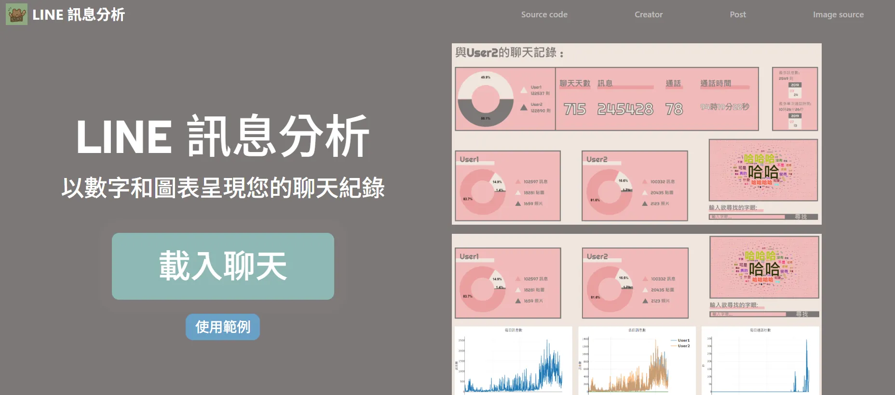
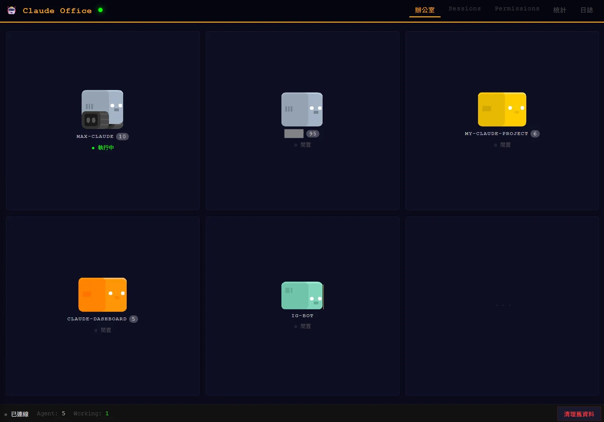
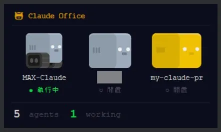
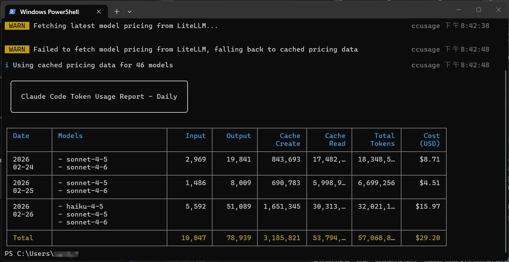
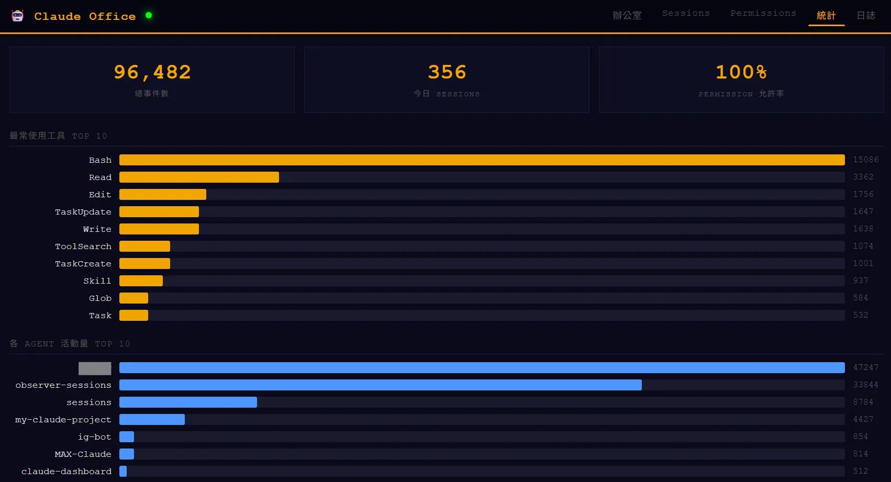

Coming out of an open-source rewrite, I want to draw a clear line between Skills, Custom Commands, MCP, and Subagents in the Claude ecosystem. They get mixed up. They are not the same thing.
Claude Code is Anthropic's command-line developer tool. After installation, the user chats with Claude in a local terminal and lets it read/write project files and run shell commands. It has four extension mechanisms (Skills / Custom Commands / MCP / Subagents) with different design intents that new users often confuse.
Pixel Agents is a GitHub open-source project that visualizes AI agents as pixel-art virtual office characters. I rewrote it into a small dashboard for monitoring my own local AI tasks. This piece uses the rewrite experience to lay out the four mechanisms side by side.

A few days back I found Pixel Agents on GitHub. The project visualizes AI agents as pixel-style office characters in a virtual room. The original design watches and manages agent state. With some Claude-assisted rewriting, I adapted it into a small control surface that tracks local AI task status.
The rewrite exposed a structural issue. Claude CLI and Claude Code are engineer-first tools. Their file layout and configuration logic do not feel obvious to non-technical users. "Where does this go?" "Why is it set up this way?" become the first entry barriers.



On the Pro plan, even pure Q&A development burns tokens fast. My current trade-off: wire MCP (Model Context Protocol) into Obsidian and let it auto-update Markdown files as a project knowledge base. Development context stays saved and retrievable. I do not have to rebuild the situation every session.

Through a few rounds of trial and tuning, I noticed the Claude ecosystem has several "personalization/customization" mechanisms with overlapping positioning. Skills especially deserves to be separated cleanly from the others.
# Comparing the Mechanisms
This table lines up the four mechanisms so a developer can pick the right one:
| Mechanism | Trigger | Persistence | Core content | Load timing | Best fit |
|---|---|---|---|---|---|
|
Skills
capability
|
AI decides from task description | across sessions across projects |
procedural knowledge, workflows executable script bundles |
dynamic load on demand | when Claude needs to apply domain expertise on its own |
|
Custom Commands
shortcuts
|
user types it e.g. /review-pr | project scope or user scope |
Prompt template single file | loaded when the user triggers it | when the user knows exactly what fixed operation to run |
|
MCP
Model Context Protocol
|
tool call | loaded at startup | ways to reach external services APIs, databases, etc. | called on demand | when Claude needs to fetch external data or use an external tool |
|
Subagents
child agents
|
Claude delegates or you start one |
task lifetime | independent AI instances | spawned on demand | complex task decomposition with isolated context, parallelism |
# What Each Mechanism Actually Is
1. Skills: procedural knowledge, applied by the AI
Skills differ in one key way: the AI decides when to use them. They follow a progressive-disclosure design that only loads relevant context on demand. The user does not invoke them. Claude picks them up from the task description.
Structurally, a Skill is a capsule of procedural knowledge: workflow, decision logic, executable script. Persistence stretches across sessions and projects. Skills are the right place to build Claude's specialized capability library.
2. Custom Commands: user-triggered shortcuts
Custom Commands fire when the user types a specific command (like /review-pr). Persistence stays at the project or user level. Content is a single Prompt template.
Fit: situations where the user already knows exactly what to run — code review, formatted document generation, repetitive ops. Control stays on the user side.
3. MCP: the bridge to the outside world
MCP positions cleanly: a standardized protocol for connecting external services so Claude can safely reach external systems and data through structured tools. API access, database queries, or in this case Obsidian file read/write — MCP is Claude's communication channel with the outside.
Its essence: a collection of tool methods. Not a knowledge or process bundle. That is the cleanest line between MCP and Skills: Skills wrap "how to do it," MCP supplies "what external resources are available."
4. Subagents: parallel work and isolated context
Subagents exist to handle complex task decomposition. When Claude decides a subtask needs its own context or can run in parallel, it spawns a Subagent. The child agent holds independent state and tool permissions. The parent only receives and integrates the final result. This trims token load and the resource is reclaimed when the task ends.
These are dynamically created compute units. Persistence equals the task's lifetime. The clearest contrast with Skills: Skills are capabilities, Subagents are execution instances.
# Early Practical Notes
From the Pixel Agents rewrite, a cleaner collaboration pattern emerges:
- 1. Skills build the core capability library — define what Claude can do
- 2. MCP connects the outside world — define what Claude can reach
- 3. Custom Commands standardize repetitive flows — define what the user can invoke quickly
- 4. Subagents handle complex decomposition — define how tasks can run in parallel

The current Obsidian + MCP setup is, in effect, plugging an external knowledge base (Markdown files) into Claude through MCP. Claude can read project docs through the build cycle without me reloading context each time. Token pressure eases. Project management gets more structured.
# A Living Experiment
The architecture is still in motion. Where Skills end and other mechanisms begin, when to choose Custom Commands over Skills, how to design MCP services well — all of these stay open. If you are running similar AI Agent experiments, get in touch. Open source and collaboration come down to letting tools and knowledge keep evolving.
Tool Development & Token Optimization
I keep building small auxiliary tools. Reach out if you need something.
A first draft of a token-optimization Skill is written and will ship soon. Given Pro plan limits, more architectural room to optimize is still there.